Montserrat
시간대별 일정, 이동 정보, 지도와 관람 포인트를 확인하세요.
예상 도보82분
대중교통195분
택시·차량0분
일정 지점11곳
여행 전 확인: Cremallera 산악열차 조합 기준. Sant Joan Funicular 운행은 당일 확인.
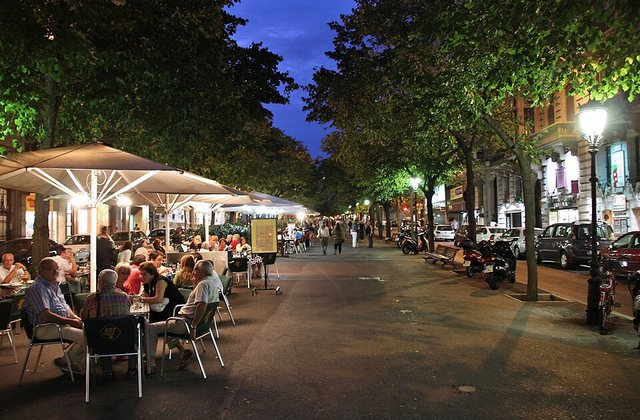
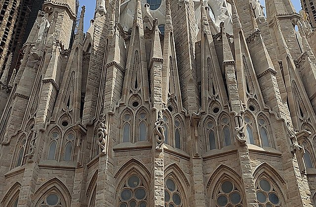
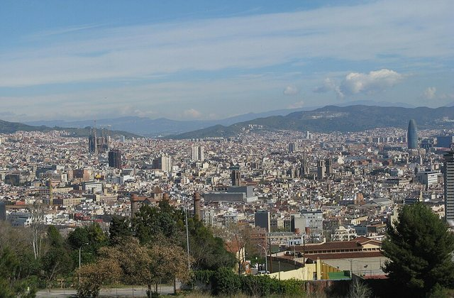
왜 중요한가숙소 출발은(는) 오늘의 흐름에서 다음 장면으로 자연스럽게 이어지는 핵심 지점이다.
볼 포인트Plaça d’Espanya 이동. 대표 풍경과 공간의 분위기에 집중한다.
실전 팁혼잡하면 핵심을 보고 이동하고, 예약 장소는 15분 일찍 도착한다.
시간 관리표시된 이동시간에 환승·대기 10분을 더한다.
MetroUrgell Metro Barcelona → Placa Espanya FGC12분 · 경로 ↗ Plaça d’Espanya FGC
R5·결합권 확인
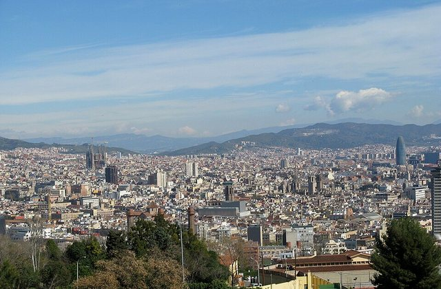
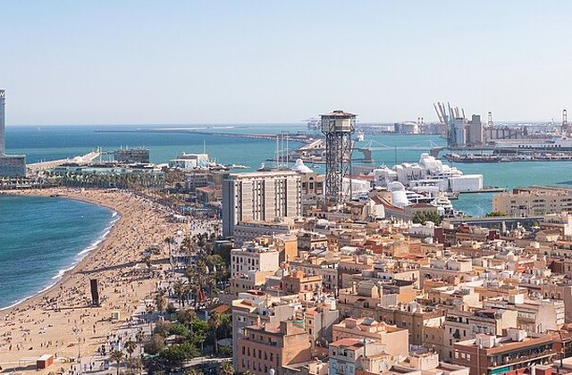
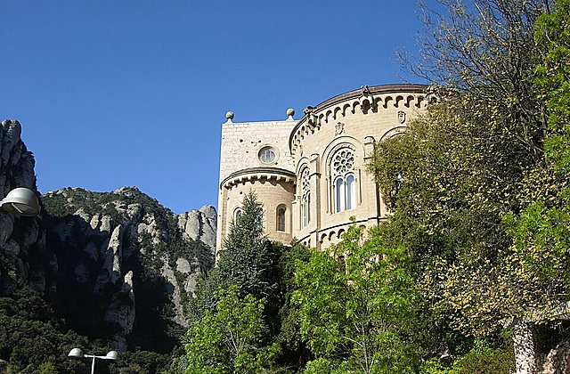
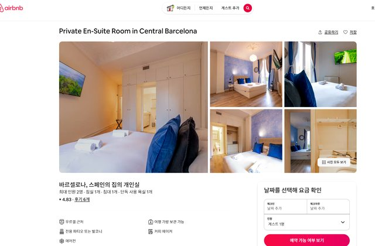
왜 중요한가Plaça d’Espanya FGC은(는) 오늘의 흐름에서 다음 장면으로 자연스럽게 이어지는 핵심 지점이다.
볼 포인트R5·결합권 확인. 대표 풍경과 공간의 분위기에 집중한다.
실전 팁혼잡하면 핵심을 보고 이동하고, 예약 장소는 15분 일찍 도착한다.
시간 관리표시된 이동시간에 환승·대기 10분을 더한다.
열차Placa Espanya FGC → Monistrol de Montserrat Station70분 · 경로 ↗ 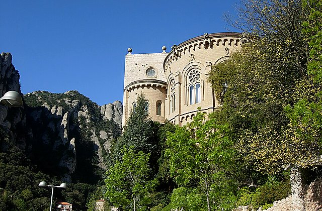
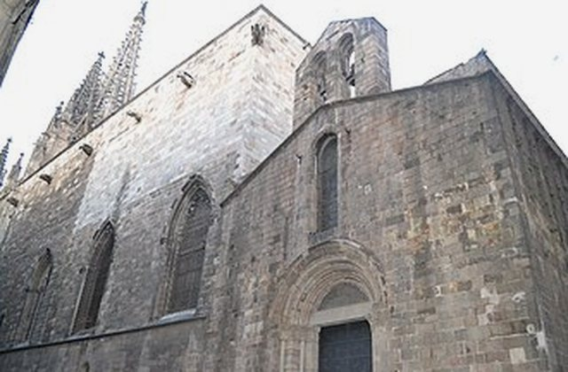
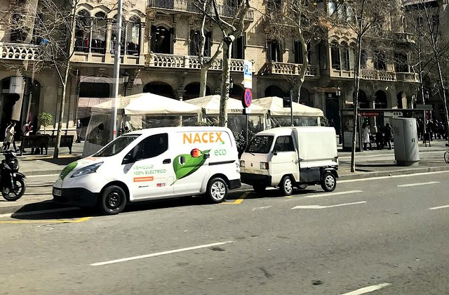
왜 중요한가FGC R5은(는) 오늘의 흐름에서 다음 장면으로 자연스럽게 이어지는 핵심 지점이다.
볼 포인트Monistrol 방면. 대표 풍경과 공간의 분위기에 집중한다.
실전 팁혼잡하면 핵심을 보고 이동하고, 예약 장소는 15분 일찍 도착한다.
시간 관리표시된 이동시간에 환승·대기 10분을 더한다.
산악열차Monistrol de Montserrat Station → Montserrat Rack Railway15분 · 경로 ↗ 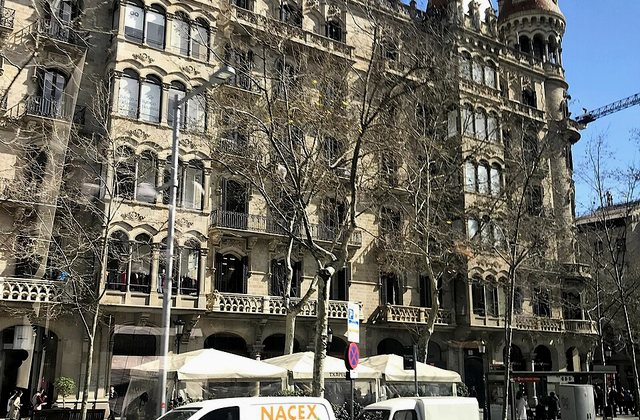
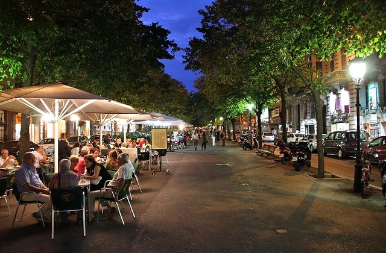
왜 중요한가Cremallera은(는) 오늘의 흐름에서 다음 장면으로 자연스럽게 이어지는 핵심 지점이다.
볼 포인트산악열차 환승. 대표 풍경과 공간의 분위기에 집중한다.
실전 팁혼잡하면 핵심을 보고 이동하고, 예약 장소는 15분 일찍 도착한다.
시간 관리표시된 이동시간에 환승·대기 10분을 더한다.
도보Montserrat Rack Railway → Montserrat Monastery Spain5분 · 경로 ↗ Montserrat Monastery
바실리카·광장
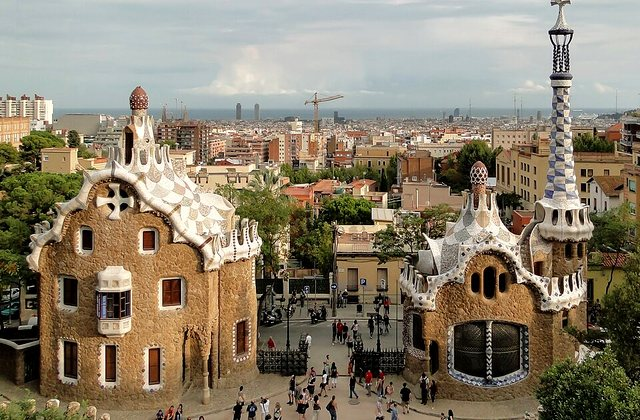
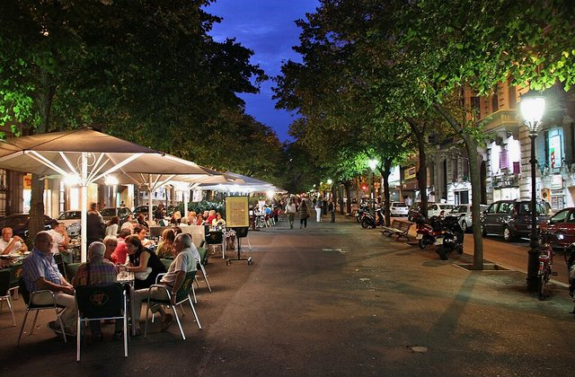
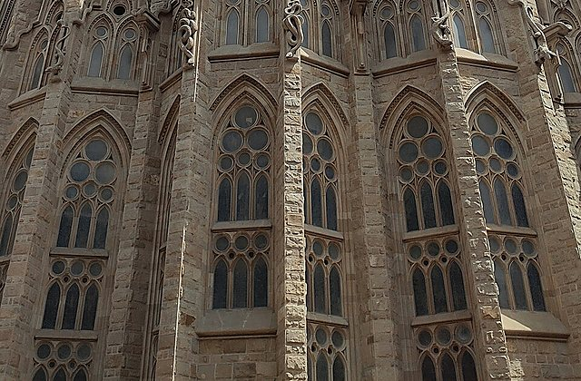
왜 중요한가Montserrat Monastery은(는) 오늘의 흐름에서 다음 장면으로 자연스럽게 이어지는 핵심 지점이다.
볼 포인트바실리카·광장. 대표 풍경과 공간의 분위기에 집중한다.
실전 팁혼잡하면 핵심을 보고 이동하고, 예약 장소는 15분 일찍 도착한다.
시간 관리표시된 이동시간에 환승·대기 10분을 더한다.
도보Montserrat Monastery Spain → Montserrat Monastery Restaurants8분 · 경로 ↗ 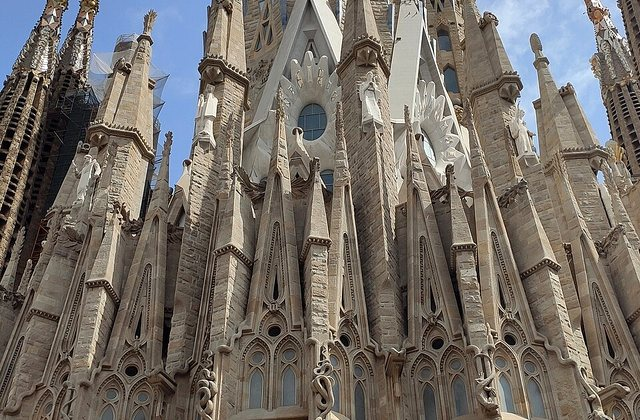
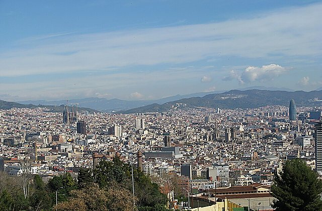
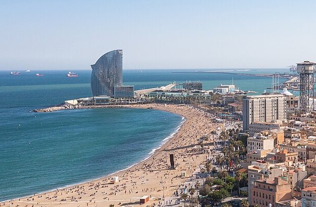
왜 중요한가Montserrat Lunch은(는) 오늘의 흐름에서 다음 장면으로 자연스럽게 이어지는 핵심 지점이다.
볼 포인트간단한 점심. 대표 풍경과 공간의 분위기에 집중한다.
실전 팁혼잡하면 핵심을 보고 이동하고, 예약 장소는 15분 일찍 도착한다.
시간 관리표시된 이동시간에 환승·대기 10분을 더한다.
도보Montserrat Monastery Restaurants → Sant Joan Funicular Montserrat10분 · 경로 ↗ Sant Joan Funicular
전망 또는 대체 산책
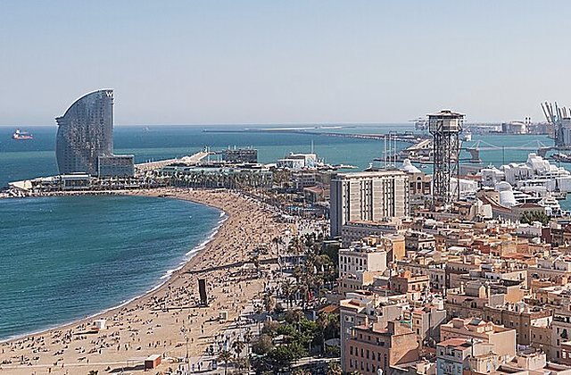
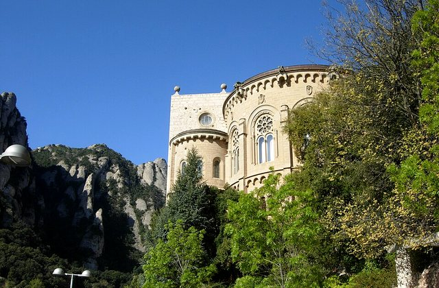
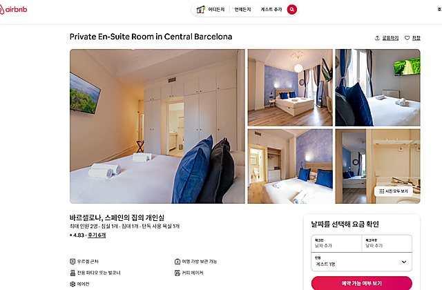
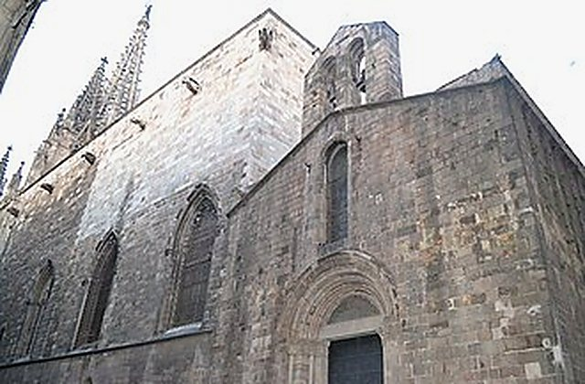
왜 중요한가Sant Joan Funicular은(는) 오늘의 흐름에서 다음 장면으로 자연스럽게 이어지는 핵심 지점이다.
볼 포인트전망 또는 대체 산책. 대표 풍경과 공간의 분위기에 집중한다.
실전 팁혼잡하면 핵심을 보고 이동하고, 예약 장소는 15분 일찍 도착한다.
시간 관리표시된 이동시간에 환승·대기 10분을 더한다.
푸니쿨라+도보Sant Joan Funicular Montserrat → Montserrat Monastery Spain25분 · 경로 ↗ 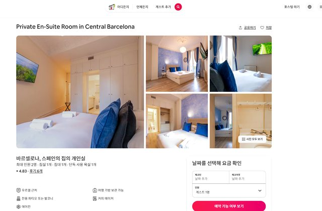
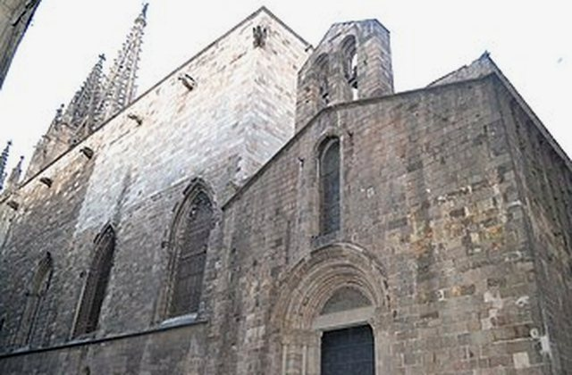
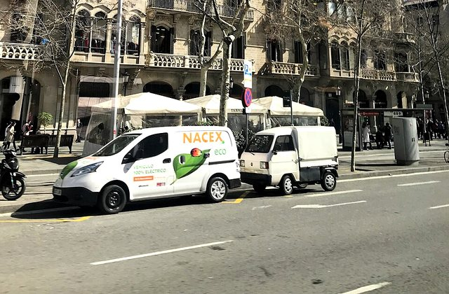
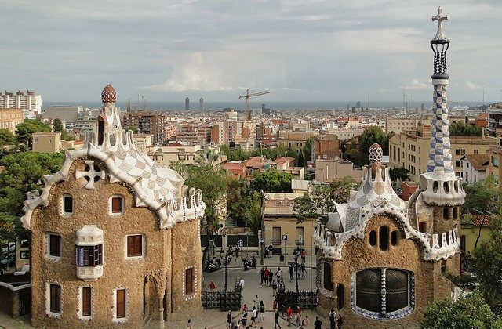
왜 중요한가수도원 복귀은(는) 오늘의 흐름에서 다음 장면으로 자연스럽게 이어지는 핵심 지점이다.
볼 포인트하산 준비. 대표 풍경과 공간의 분위기에 집중한다.
실전 팁혼잡하면 핵심을 보고 이동하고, 예약 장소는 15분 일찍 도착한다.
시간 관리표시된 이동시간에 환승·대기 10분을 더한다.
산악열차+열차Montserrat Monastery Spain → Placa Espanya Barcelona90분 · 경로 ↗ Barcelona 귀환
Cremallera+FGC
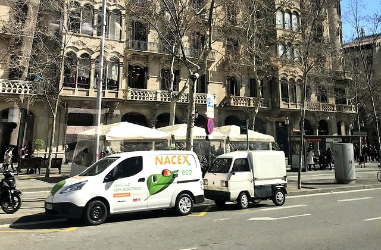
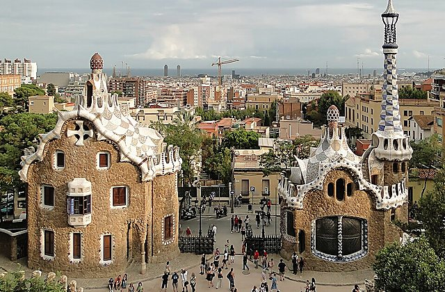
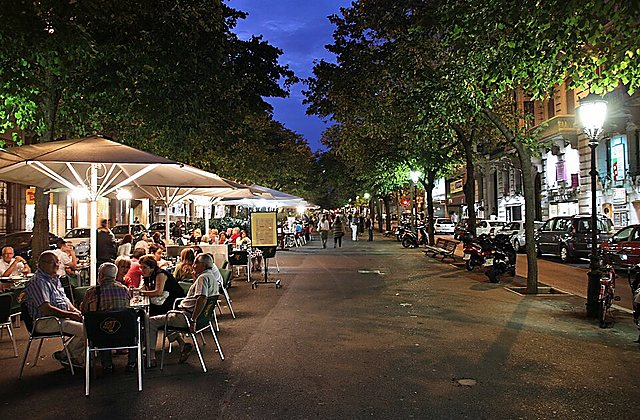
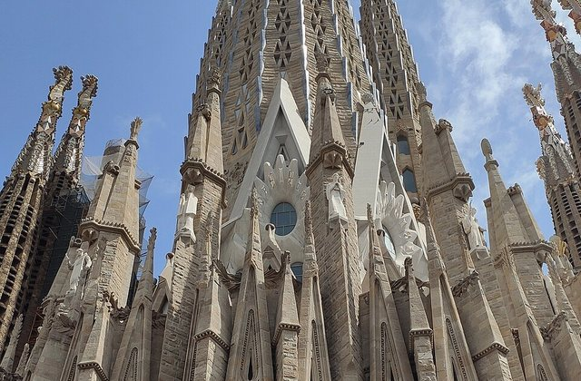
왜 중요한가Barcelona 귀환은(는) 오늘의 흐름에서 다음 장면으로 자연스럽게 이어지는 핵심 지점이다.
볼 포인트Cremallera+FGC. 대표 풍경과 공간의 분위기에 집중한다.
실전 팁혼잡하면 핵심을 보고 이동하고, 예약 장소는 15분 일찍 도착한다.
시간 관리표시된 이동시간에 환승·대기 10분을 더한다.
MetroPlaca Espanya Barcelona → Urgell Metro Barcelona12분 · 경로 ↗ 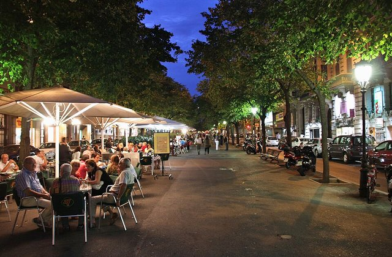
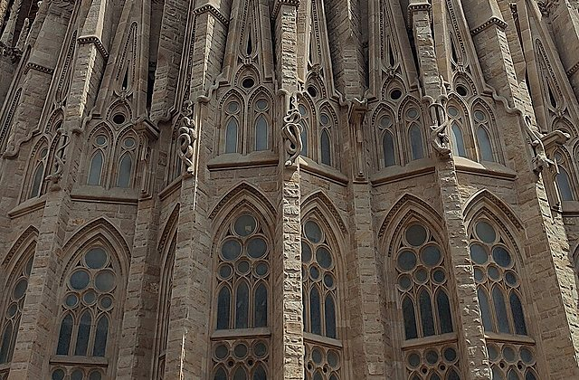
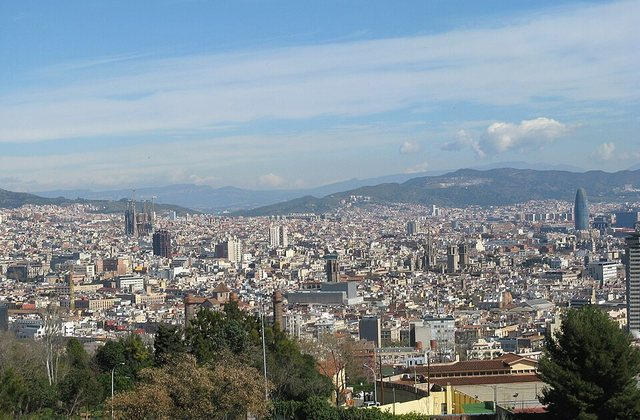
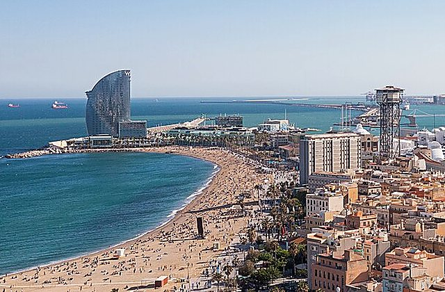
왜 중요한가숙소 인근은(는) 오늘의 흐름에서 다음 장면으로 자연스럽게 이어지는 핵심 지점이다.
볼 포인트편한 저녁. 대표 풍경과 공간의 분위기에 집중한다.
실전 팁혼잡하면 핵심을 보고 이동하고, 예약 장소는 15분 일찍 도착한다.
시간 관리표시된 이동시간에 환승·대기 10분을 더한다.
도보Urgell Barcelona → Urgell Metro Barcelona5분 · 경로 ↗ 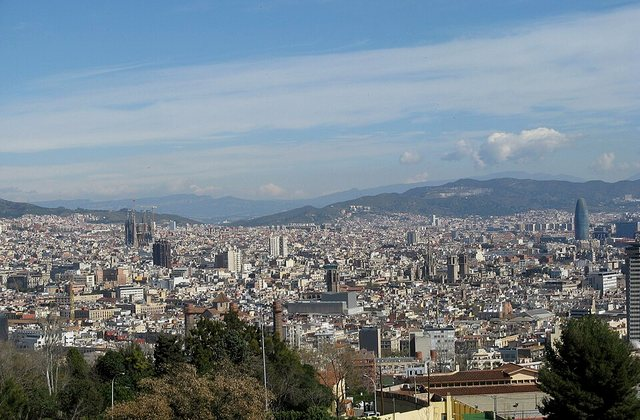
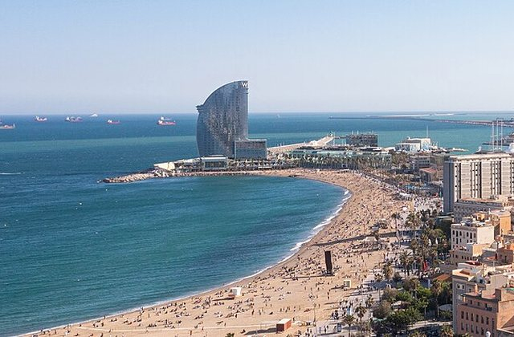
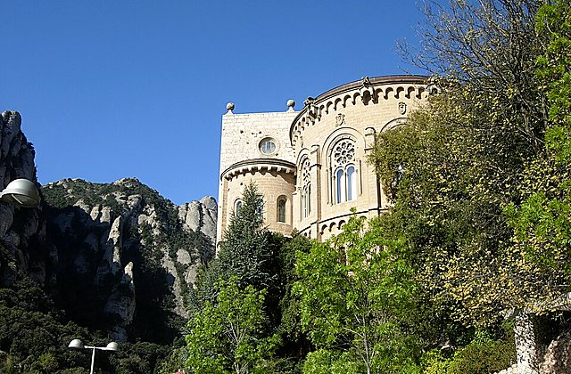
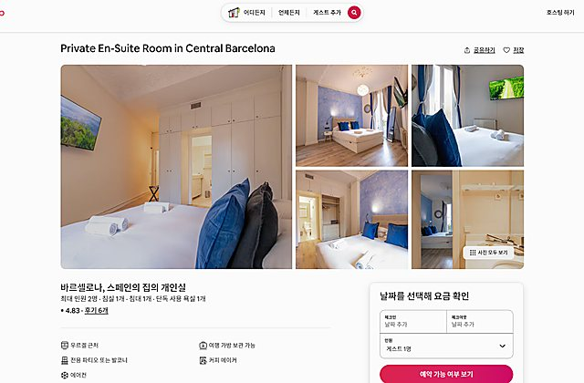
왜 중요한가숙소 복귀은(는) 오늘의 흐름에서 다음 장면으로 자연스럽게 이어지는 핵심 지점이다.
볼 포인트일정 종료. 대표 풍경과 공간의 분위기에 집중한다.
실전 팁혼잡하면 핵심을 보고 이동하고, 예약 장소는 15분 일찍 도착한다.
시간 관리표시된 이동시간에 환승·대기 10분을 더한다.